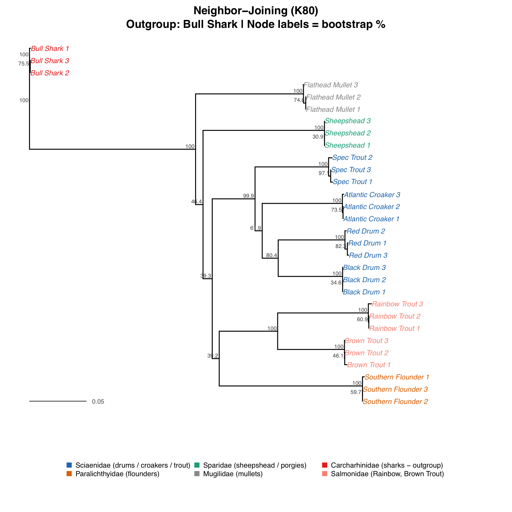
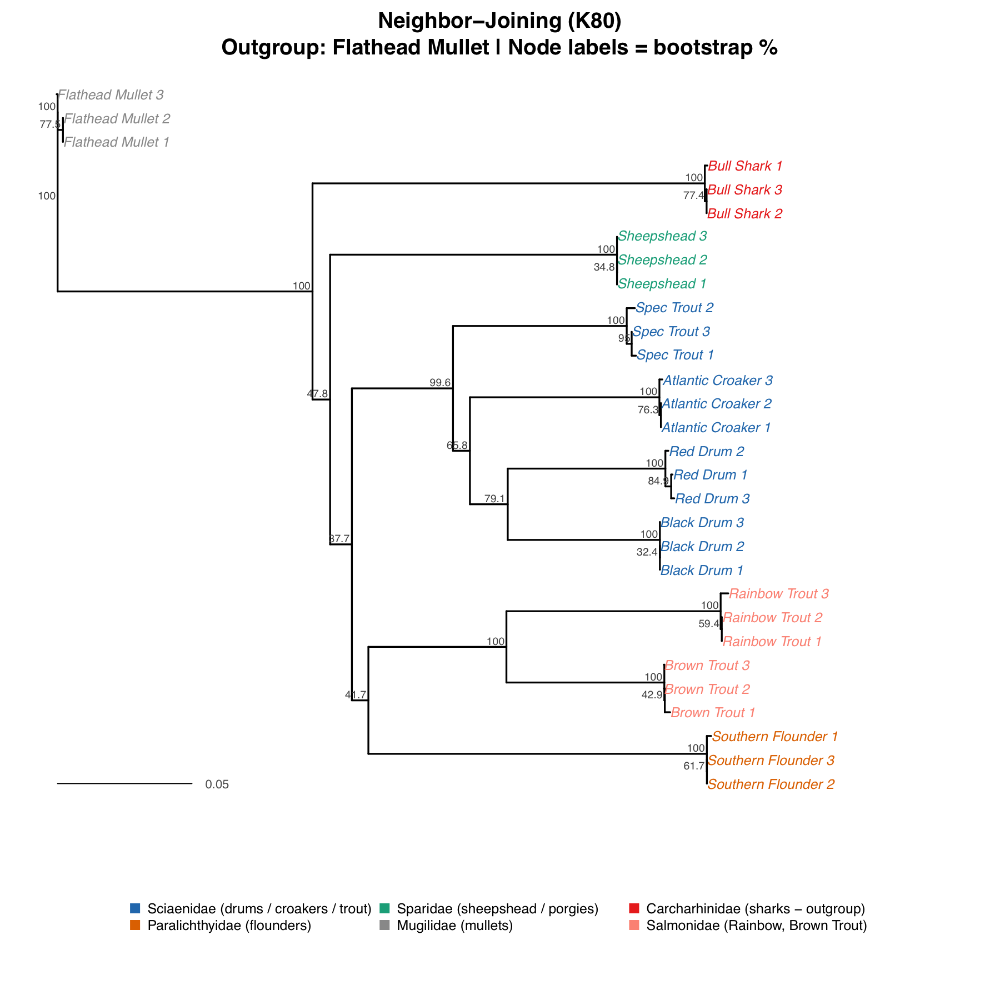

What You're Looking At
This analysis examines eight species collected from Galveston Bay and the broader Gulf of Mexico, chosen to represent a range of families and lifestyles you'd encounter on a single fishing trip. Four species belong to the family Sciaenidae — the drums and croakers: Red Drum (Sciaenops ocellatus), Black Drum (Pogonias cromis), Speckled Trout (Cynoscion nebulosus), and Atlantic Croaker (Micropogonias undulatus). The other bony fish are Southern Flounder (Paralichthys lethostigma, family Paralichthyidae), Sheepshead (Archosargus probatocephalus, family Sparidae), and Flathead Mullet (Mugil cephalus, family Mugilidae). Rounding out the dataset as our evolutionary outgroup is Bull Shark (Carcharhinus leucas, family Carcharhinidae) — the only cartilaginous fish in the group, included precisely because its deep divergence from all bony fish gives us an unambiguous anchor for the root of the tree.
For each species, two or three COI (cytochrome oxidase I) sequences were downloaded from GenBank, giving us 24 sequences total. Using multiple sequences per species serves as a built-in quality check: if three independent submissions for the same species always cluster tightly together on the tree, we know the sequences are consistently labeled and the gene is behaving as a reliable marker. If one sequence strays far from its siblings, that's a flag to investigate — a possible mislabeled entry or a contamination issue in the original study. In our analysis, every within-species triplet clustered perfectly, which is a satisfying confirmation that the data are clean.
All sequences were aligned using MUSCLE, a fast multiple sequence alignment algorithm well-suited to mitochondrial protein-coding genes. The final aligned matrix was approximately 660 base pairs long. Three independent methods were then used to infer the tree: Neighbor-Joining (NJ), Maximum Likelihood (ML), and Bayesian inference. Running all three is standard practice — when independent methods built on different mathematical frameworks agree, confidence in the result goes up considerably.
For this updated analysis, two Salmonidae species were added as an additional reference point: Rainbow Trout (Oncorhynchus mykiss) and Brown Trout (Salmo trutta). These are the fish most people think of when they hear the word "trout." Their inclusion allows us to directly answer the question of whether Speckled Trout — a common name applied to Cynoscion nebulosus in Gulf Coast fishing culture — has any meaningful evolutionary relationship to true trout. The answer is visible the moment you look at the tree.
The Neighbor-Joining Tree
The Neighbor-Joining tree, built from pairwise K80 distances, gives us our first look at the data and sets the stage for the more sophisticated analyses that follow. The most immediately striking new feature in the expanded dataset is the Salmonidae clade: Rainbow Trout and Brown Trout cluster together at 100% bootstrap support, forming a tight group that sits completely separate from every Gulf fish in the dataset. These are the fish people think of when they say "trout" — and yet they occupy an entirely different part of the tree.
Speckled Trout (Cynoscion nebulosus) is nested firmly inside Sciaenidae — the same clade as Red Drum, Black Drum, and Atlantic Croaker — with 100% bootstrap support for that family grouping. The evolutionary distance between Speckled Trout and Rainbow Trout is enormous: the branch separating Salmonidae from Sciaenidae is one of the longest in the tree, comparable in scale to the separation between those families and Bull Shark. The common name "Speckled Trout" was given because early observers noticed the spotted pattern and similar table quality — not because of any evolutionary kinship with Salmonidae. The COI tree makes this unmistakably clear.
Within Sciaenidae, Red Drum and Black Drum are sister taxa — they share a more recent common ancestor with each other than either does with Speckled Trout or Atlantic Croaker. This is consistent with the documented occurrence of natural hybrids between these two species in Gulf waters, which requires a high degree of genetic similarity. Southern Flounder remains isolated from all Perciformes with 100% bootstrap support: its flat body plan and eye-migration development are adaptations evolved independently from anything in the drum lineage. Sheepshead and Flathead Mullet are consistently placed outside Sciaenidae, consistent with their placement in entirely different families.
Some of the internal branching points within Sciaenidae show NJ bootstrap values in the range of 30–47%. This means we cannot say with high confidence whether, for example, Atlantic Croaker diverged before or after Speckled Trout within the family. That uncertainty is real and expected — a single 650 bp gene contains limited signal for resolving very recent divergences among closely related species. Crucially, this does not cast doubt on the family grouping itself, which is supported at 100%. The two NJ trees — one rooted on Bull Shark, one on Flathead Mullet — agree on every major grouping, confirming that these results are robust to outgroup choice.


Interactive: Choose Your Outgroup
Select any species as the evolutionary outgroup and see how the tree changes. Some choices are biologically justified — others are instructive mistakes.
Trees shown are Neighbor-Joining (K80 distances) re-rooted on the selected species. The underlying topology and branch lengths do not change — only the root placement changes. Bootstrap values from 1000 replicates.
The Maximum Likelihood Tree
The Maximum Likelihood tree was built using the GTR+Gamma+I substitution model fitted to the aligned COI matrix. GTR stands for General Time Reversible — it allows all six possible types of DNA substitution (A↔G, C↔T, A↔C, A↔T, G↔C, G↔T) to occur at their own estimated rates, rather than assuming they're all equally likely. Gamma adds a shape parameter that lets substitution rate vary across different positions in the gene, reflecting the biological reality that some sites evolve much faster than others. I accounts for invariant sites — positions that appear fixed across the entire dataset and are assumed to never change.
The family-level topology matches NJ completely. The Salmonidae clade — Rainbow Trout and Brown Trout — is recovered at 100% bootstrap support and sits entirely separate from Sciaenidae. Speckled Trout clusters inside Sciaenidae at 100% bootstrap; the node uniting all four Sciaenidae species is also at 100%. Every individual species triplet is supported at 100%, confirming the NJ quality-check result. Southern Flounder's separation from all Perciformes is fully consistent between the two methods. When independent methods built on very different mathematical approaches — pairwise distance minimization versus whole-alignment likelihood maximization — agree on a result, confidence in that result is high.
Some within-Sciaenidae nodes continue to show lower ML bootstrap values in the 25–64% range. These are the same internal branches that showed uncertainty in the NJ analysis. The Sheepshead and Mullet placements also show lower support, which is consistent across methods. Three sequences — Bull Shark 3, Southern Flounder 3, and Flathead Mullet 2 — show slightly scattered placement in the ML tree compared to their siblings. Within each species, pairwise COI distances are extremely small (0.0016 or less), meaning these sequences are nearly identical to the others from the same species. When sequences are this similar, ML optimization can place them in slightly different positions from replicate to replicate because the likelihood surface is nearly flat in that region — there is essentially no signal distinguishing one arrangement from another. This is a known artifact with near-duplicate sequences and has no effect on the family-level topology.

The Bayesian Tree
The Bayesian analysis, run in MrBayes with the GTR+Gamma model over 500,000 MCMC generations, produces the cleanest-looking result of the three methods. Nearly every node carries a posterior probability of 1.00, including the node uniting all Sciaenidae, the node uniting Rainbow Trout and Brown Trout as Salmonidae, and — most tellingly — the node that separates those two families from one another. Speckled Trout sits at PP=1.00 inside Sciaenidae. Rainbow and Brown Trout sit at PP=1.00 inside their own completely separate Salmonidae clade. The branch separating Salmonidae from Sciaenidae is one of the longest in the ingroup, representing tens of millions of years of independent evolution. The name "Speckled Trout" is a relic of early observation and cultural naming conventions. The DNA is unambiguous: this fish is a drum.
The only nodes with lower posterior support — PP=0.70, 0.58, and 0.51 — occur at deeper internal splits within Sciaenidae. These are exactly the same nodes that showed lower NJ bootstrap values and lower ML bootstrap values. All three methods agreeing on where uncertainty lies is a reassuring sign: the data are consistently pointing to the same genuinely ambiguous branching events, and the uncertainty is biological rather than methodological. The signal for resolving those particular divergences is simply not contained in 650 bp of COI.
Posterior probability is often misunderstood, so it's worth being precise. A PP of 0.58 at a node does not mean the node is wrong — it means that given the data and the model, there is a 58% probability that those taxa form the grouping shown, and a 42% probability that the true branching order is slightly different. Bayesian posterior probabilities tend to be numerically higher than ML bootstrap values for the same node, and the two are not directly comparable — a node with PP=0.68 and ML bootstrap=40% are both expressing genuine uncertainty about that particular branching order in consistent ways. For the purposes of this analysis, the fully supported nodes are more than sufficient to answer the central question.

Discussion Questions
Each question below is based on something the trees actually show. Read the question, think through it, then click to reveal a possible answer.
Speckled Trout clusters with the drums and croakers — not with freshwater trout. What does this tell us about the reliability of common names for understanding evolutionary relationships?
Common names reflect cultural familiarity and often describe appearance, flavor, or behavior — not ancestry. Speckled Trout was named for its spotted pattern and table quality, both of which reminded early settlers of true trout (Salmonidae). But DNA reveals it is a drum, more closely related to Red Drum and Atlantic Croaker than to any Salmonid. This is why biologists use Latin binomial names: Cynoscion nebulosus carries no assumptions about ancestry, while "trout" carries a misleading one. The molecular tree corrects the record.
Red Drum and Black Drum are sister taxa in every tree. What biological evidence from Galveston Bay is consistent with this close relationship?
Red Drum and Black Drum can interbreed and produce viable hybrids in the wild — a phenomenon documented in Gulf coastal waters. Hybridization between species typically requires a high degree of genetic similarity, particularly in the molecular machinery governing reproduction. Sister taxa, by definition, share the most recent common ancestor in the dataset, which places them genetically closer to each other than either is to Speckled Trout or Atlantic Croaker. The COI tree is thus consistent with what field biologists have observed: these two species are close enough to occasionally cross the reproductive barrier.
Southern Flounder is consistently placed far from the drums despite living in the same estuary and sharing a similar bottom-dwelling lifestyle. What evolutionary concept explains this pattern?
This is a textbook example of convergent evolution — unrelated lineages independently evolving similar traits in response to similar ecological pressures. Southern Flounder and drums both occupy Galveston Bay's shallow estuarine habitat, and both are ambush predators that benefit from camouflage against a sandy bottom. But the flounder's dramatically flat body and eye migration evolved in the lineage Paralichthyidae completely independently from anything that happened in Sciaenidae. Shared habitat can produce shared adaptations without shared ancestry. The molecular tree sees through the ecological convergence and recovers the true history.
Some internal nodes within Sciaenidae have bootstrap values of 30–50% even though the family itself is supported at 100%. What does this mean, and is it a problem?
Bootstrap values measure confidence in a specific branching order, not in the existence of a group. A node with 40% bootstrap support means that only 40% of resampled datasets recovered that exact split — the remaining 60% recovered slightly different arrangements among the same taxa. This reflects genuine ambiguity about whether, say, Atlantic Croaker diverged before or after Speckled Trout within Sciaenidae. For the question this tutorial is designed to ask — does COI correctly identify family membership? — the answer is clearly yes. All three methods (NJ, ML, Bayesian) unanimously place all four Sciaenidae together at 100% support, separated from all other families. Resolving the fine internal branching order would require more data, such as multiple loci or a genome-wide approach.
Rainbow Trout and Brown Trout cluster together at 100% bootstrap/PP in all three methods, completely separate from Speckled Trout. If you were a fisheries manager relying only on common names, what management mistakes might you make?
A manager using common names might group all "trout" together for stock assessments, harvest limits, or habitat protection priorities. But Rainbow and Brown Trout are coldwater Salmonidae requiring very different habitat conditions than Speckled Trout, which is a warm-water estuarine drum. Treating them as related would mean habitat restoration dollars might go to the wrong environments, or harvest limits for one "trout" might be applied incorrectly to another. DNA-based identification prevents this category error and ensures that management decisions are grounded in actual evolutionary relationships rather than superficial naming conventions.